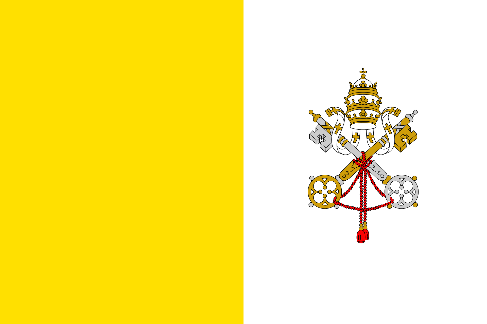

Vatikanstadt – Der kleinste Staat der Welt
Vatikanstadt, offiziell der Staat Vatikanstadt, ist der kleinste unabhängige Staat der Welt.
Er liegt vollständig innerhalb der italienischen Hauptstadt Rom.
Der Vatikan hat etwa 800 Einwohner und ist das geistliche Zentrum der römisch-katholischen Kirche.
Staatsoberhaupt ist der Papst.
Geografie und Lage
Der Vatikanstaat ist nur etwa 0,44 Quadratkilometer groß und damit der kleinste Staat der Erde.
Er besteht hauptsächlich aus religiösen Gebäuden, Plätzen und Gärten.
Bekannte Orte sind der Petersplatz, der Petersdom und die Vatikanischen Gärten.
Trotz seiner geringen Größe ist der Vatikan ein eigenständiger Staat.
Geschichte und Bedeutung
Die Geschichte des Vatikans ist eng mit dem Christentum verbunden.
Der Petersdom wurde über dem Grab des Apostels Petrus errichtet.
1929 wurde der Vatikan durch die Lateranverträge offiziell als unabhängiger Staat anerkannt.
Seitdem ist er das religiöse Zentrum für Millionen Gläubige weltweit.
Kultur und Sehenswürdigkeiten
Der Vatikan ist berühmt für seine Kunst- und Kulturschätze.
Die Vatikanischen Museen beherbergen weltbekannte Werke, darunter die Sixtinische Kapelle
mit den Deckenfresken von Michelangelo.
Auch der Petersdom zählt zu den bedeutendsten Kirchen der Welt.
Sprache und Verwaltung
Die Amtssprache des Vatikans ist Latein, im Alltag wird vor allem Italienisch gesprochen.
Der Vatikan ist eine absolute Wahlmonarchie, in der der Papst die höchste Macht besitzt.
Er vereint religiöse und staatliche Aufgaben in einer Person.
Wirtschaft und Tourismus
Der Vatikan hat keine Industrie oder Landwirtschaft.
Die wichtigsten Einnahmequellen sind der Tourismus, der Verkauf von Briefmarken und Souvenirs
sowie Spenden von Gläubigen aus aller Welt.
Fazit
Vatikanstadt ist zwar der kleinste Staat der Welt, hat jedoch eine große religiöse und kulturelle Bedeutung.
Mit seiner langen Geschichte, einzigartigen Kunstwerken und weltweiten Ausstrahlung ist der Vatikan
ein besonderer Ort.